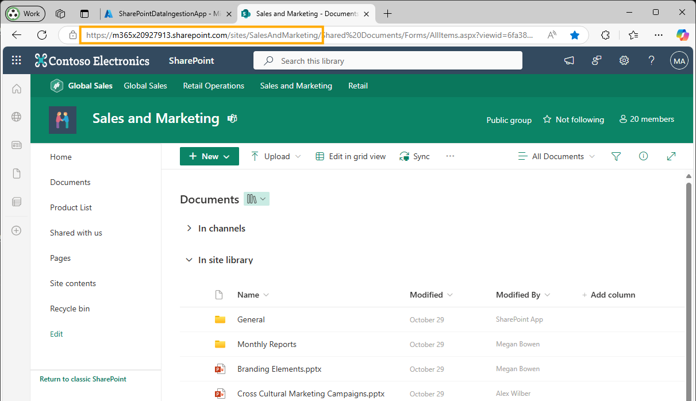
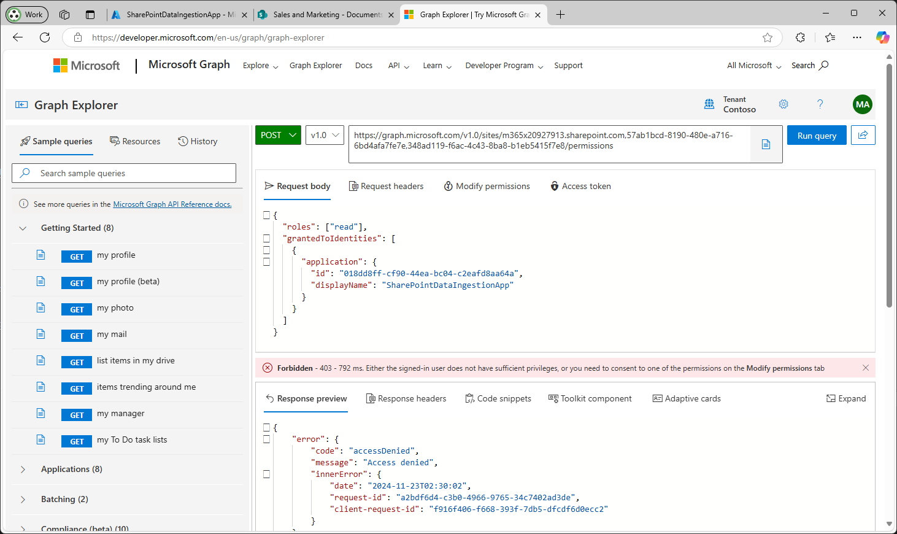

SharePoint Setup (Pre-release)
This section explains how to configure SharePoint as a data source for the GPT-RAG Azure AI Search Index, using the Sites.Selected permission to limit access to specific site collections.
The configuration process involves the following steps:
- Exploring SharePoint with Graph API: Navigate and discover SharePoint site information using Microsoft Graph API.
- App Registration: Create an Azure Entra ID application to enable the solution to connect to SharePoint via Graph API.
- Ingestion Job: Configure the data sources to define which SharePoint sites, lists, and drives will be indexed.
- Run Job: Enable and schedule the ingestion jobs using CRON expressions in App Configuration.
- Validation: Test and verify that the SharePoint content is being successfully indexed.
Using
Sites.Selectedensures that your application only has access to the SharePoint sites you've explicitly granted permissions to, enhancing security by limiting access scope
Exploring SharePoint with Graph API
Before configuring the ingestion job, you need to understand your SharePoint site structure. This section shows you how to use Microsoft Graph API to discover site information, lists, columns, items, and permissions.
Prerequisites
- Access to Microsoft Graph Explorer
- A user account with access to the SharePoint site you want to explore
- Basic understanding of your SharePoint site URL structure
Understanding SharePoint Site URLs
A typical SharePoint site URL follows this pattern:
https://{siteDomain}/sites/{siteName}
For example: https://contoso.sharepoint.com/sites/SalesAndMarketing
- siteDomain:
contoso.sharepoint.com - siteName:
SalesAndMarketing
1. Get Site Information
Retrieve basic information about your SharePoint site, including the site ID which you'll need for subsequent queries.
Endpoint (Generic)
GET https://graph.microsoft.com/v1.0/sites/{siteDomain}:/sites/{siteName}
Example
GET https://graph.microsoft.com/v1.0/sites/m365x03100047.sharepoint.com:/sites/SalesAndMarketing
Response
{
"id": "m365x03100047.sharepoint.com,9f1d115d-9c87-4f37-ba8e-e73ad39c3405,7a3700a7-3a8a-4942-9089-ad84ce9f5837",
"displayName": "Sales and Marketing",
"name": "SalesAndMarketing",
"webUrl": "https://m365x03100047.sharepoint.com/sites/SalesAndMarketing"
}
💡 Save the
idvalue - this is your{siteId}for all subsequent queries.
2. Get Site Lists
Retrieve all lists and document libraries from the site. This includes both standard SharePoint lists and document libraries.
Endpoint (Generic)
GET https://graph.microsoft.com/v1.0/sites/{siteId}/lists
Example
GET https://graph.microsoft.com/v1.0/sites/m365x03100047.sharepoint.com,9f1d115d-9c87-4f37-ba8e-e73ad39c3405,7a3700a7-3a8a-4942-9089-ad84ce9f5837/lists
Response
{
"value": [
{
"id": "7691f86f-8bdc-40eb-bcf5-7a23d0e9006c",
"displayName": "Product List",
"name": "Product List",
"list": {
"template": "genericList"
}
},
{
"id": "1be0da74-2b71-45e0-a9d3-1ffafa7d0ba7",
"displayName": "Shared Documents",
"name": "Shared Documents",
"list": {
"template": "documentLibrary"
}
}
]
}
💡 List Type Information: The
list.templateproperty indicates the type of list: -"genericList": Standard SharePoint list -"documentLibrary": Document library for file storageSave the
idvalue as your{listId}for the list you want to ingest.
3. Get List Columns
Retrieve all columns (fields) from a specific list. This information is essential for configuring which fields to include in your ingestion job.
Endpoint (Generic)
GET https://graph.microsoft.com/v1.0/sites/{siteId}/lists/{listId}/columns
Example
GET https://graph.microsoft.com/v1.0/sites/m365x03100047.sharepoint.com,9f1d115d-9c87-4f37-ba8e-e73ad39c3405,7a3700a7-3a8a-4942-9089-ad84ce9f5837/lists/7691f86f-8bdc-40eb-bcf5-7a23d0e9006c/columns
Response
{
"value": [
{
"id": "...",
"name": "Title",
"displayName": "Title",
"columnGroup": "Custom Columns"
},
{
"id": "...",
"name": "Code_x0020_Name",
"displayName": "Code Name",
"columnGroup": "Custom Columns"
},
{
"id": "...",
"name": "Product_x0020_Line",
"displayName": "Product Line",
"columnGroup": "Custom Columns"
}
]
}
💡 Column Names: Use the
nameproperty (notdisplayName) when configuring theincludeFieldsarray in your data source configuration. Note that spaces in column names are encoded as_x0020_.
4. Get List Items
Query the actual items within a list. Use the expand=fields parameter to see the field values.
Endpoint (Generic)
GET https://graph.microsoft.com/v1.0/sites/{siteId}/lists/{listId}/items?expand=fields
Example
GET https://graph.microsoft.com/v1.0/sites/m365x03100047.sharepoint.com,9f1d115d-9c87-4f37-ba8e-e73ad39c3405,7a3700a7-3a8a-4942-9089-ad84ce9f5837/lists/7691f86f-8bdc-40eb-bcf5-7a23d0e9006c/items?expand=fields
Response
{
"value": [
{
"id": "1",
"fields": {
"Title": "Product A",
"Code_x0020_Name": "PROD-A",
"Product_x0020_Line": "Electronics",
"Modified": "2024-01-15T10:30:00Z"
}
},
{
"id": "2",
"fields": {
"Title": "Product B",
"Code_x0020_Name": "PROD-B",
"Product_x0020_Line": "Home Goods",
"Modified": "2024-01-16T14:20:00Z"
}
}
]
}
💡 Testing Your Configuration: Use this endpoint to verify that your filter expressions and field selections will return the expected data before configuring the ingestion job.
5. Get Item Permissions
View who has access to specific list items. This helps you understand the permission structure before ingestion.
Endpoint (Generic)
⚠️ Note: The permissions endpoint requires the beta version of the Graph API (
/beta/instead of/v1.0/), as permissions are not fully available in v1.0.
GET https://graph.microsoft.com/beta/sites/{siteId}/lists/{listId}/items/{itemId}/permissions
Example
GET https://graph.microsoft.com/beta/sites/m365x03100047.sharepoint.com,9f1d115d-9c87-4f37-ba8e-e73ad39c3405,7a3700a7-3a8a-4942-9089-ad84ce9f5837/lists/7691f86f-8bdc-40eb-bcf5-7a23d0e9006c/items/3/permissions
Response
{
"value": [
{
"id": "...",
"roles": ["read"],
"grantedToIdentities": [
{
"user": {
"displayName": "John Doe",
"email": "john.doe@contoso.com"
}
}
]
}
]
}
💡 Permission Insights: This information helps you understand who can access the content you're planning to ingest. Ensure that the ingestion app registration has appropriate permissions to access this content.
Quick Reference: Generic Endpoints
Copy these generic endpoints to use in Graph Explorer:
# 1. Get Site Info
GET https://graph.microsoft.com/v1.0/sites/{siteDomain}:/sites/{siteName}
# 2. Get Site Lists
GET https://graph.microsoft.com/v1.0/sites/{siteId}/lists
# 3. Get List Columns
GET https://graph.microsoft.com/v1.0/sites/{siteId}/lists/{listId}/columns
# 4. Get List Items
GET https://graph.microsoft.com/v1.0/sites/{siteId}/lists/{listId}/items?expand=fields
# 5. Get Item Permissions (beta API)
GET https://graph.microsoft.com/beta/sites/{siteId}/lists/{listId}/items/{itemId}/permissions
What to Collect
As you explore your SharePoint site, collect the following information for your ingestion configuration:
| Information | Graph API Property | Used In Configuration As |
|---|---|---|
| Site ID | id from /sites/{siteDomain}:/sites/{siteName} |
siteId |
| Site Domain | Part of your SharePoint URL | siteDomain |
| Site Name | Part of your SharePoint URL | siteName |
| List ID | id from /sites/{siteId}/lists |
listId |
| List Name | name from /sites/{siteId}/lists |
listName |
| List Type | list.template from /sites/{siteId}/lists |
listType |
| Column Names | name from /sites/{siteId}/lists/{listId}/columns |
includeFields array |
Now that you understand how to explore your SharePoint structure, proceed to the App Registration section to create the necessary Azure Entra ID application.
App Registration
Prerequisites
Before you begin, ensure you have the appropriate roles for each step:
| Steps | Required Role(s) |
|---|---|
Register the app and assign Sites.Selected. |
Global Administrator, Application Administrator, or Cloud Application Administrator. |
Grant admin consent for Sites.Selected. |
Global Administrator or Application Administrator. |
| Retrieve the SharePoint site ID via Microsoft Graph. | SharePoint Administrator, Global Administrator, or a user with access to the site. |
| Assign site permissions via Microsoft Graph. | SharePoint Administrator or Global Administrator. |
Procedure
-
Register an Application in Azure Entra ID
- Sign in to the Azure Portal: Go to Azure Portal.
- Register a New Application:
- Navigate to Azure Active Directory > App registrations > New registration.
- Name: Enter a name for your application (e.g.,
SharePointDataIngestionApp). - Supported Account Types: Choose Accounts in this organizational directory only.
- Redirect URI: Leave this field empty.
- Click Register.

- Record Application IDs:
- Save the Application ID and Tenant ID for later use.

-
Configure API Permissions
-
Navigate to API Permissions:
- In your registered application, go to API permissions > Add a permission.
-
Add Microsoft Graph Permissions:
- Select Microsoft Graph > Application permissions.
- Search for and add the following permission:
Sites.Selected
-
Click Add permissions.
-
Grant Admin Consent:
- Click Grant admin consent for [Your Tenant Name].
- Confirm the action when prompted.
 Granting admin consent for
Granting admin consent for Sites.Selectedpermission -
-
Assign Access to Specific Site Collections
The
Sites.Selectedpermission requires you to explicitly grant the application access to specific site collections. This step must be performed using the Microsoft Graph API.Currently, assigning site permissions using
Sites.Selectedcannot be done through the Azure Portal. You need to use Microsoft Graph API or PowerShell.-
Gather Site Information:
-
Site URL: Navigate to the SharePoint site you wish to index and note its URL (e.g.,
https://yourdomain.sharepoint.com/sites/YourSiteName). - Site ID: You can retrieve the Site ID using Microsoft Graph API.
 Getting site URL
-
Retrieve Site ID:
-
Use Microsoft Graph Explorer:
-
Go to Microsoft Graph Explorer.
- Sign in with an account that has access to the site.
-
Make a
GETrequest to:GET https://graph.microsoft.com/v1.0/sites/{hostname}:/{server-relative-path}Replace
{hostname}with your SharePoint domain (e.g.,yourdomain.sharepoint.com) and{server-relative-path}with the site path (e.g.,/sites/YourSiteName). -
Example:
GET https://graph.microsoft.com/v1.0/sites/yourdomain.sharepoint.com:/sites/YourSiteName -
The response will include the
idof the site.
-
 Getting site ID
Getting site ID -
Grant the Application Access to the Site:
-
Make a
POSTRequest to Grant Permissions: -
In Microsoft Graph Explorer, make a
POSTrequest to:POST https://graph.microsoft.com/v1.0/sites/{site-id}/permissionsReplace
{site-id}with the ID obtained in the previous step. -
Request Body:
{ "roles": ["read"], "grantedToIdentities": [ { "application": { "id": "your_application_id", "displayName": "Your Application Name" } } ] }- Replace
your_application_idwith your application's Client ID. - Replace
Your Application Namewith your application's name. - The
"roles"can be"read"or"write"depending on your needs.
- Replace
-
Example:
{ "roles": ["read"], "grantedToIdentities": [ { "application": { "id": "12345678-90ab-cdef-1234-567890abcdef", "displayName": "SharePointDataIngestionApp" } } ] }
-
-
Run the Query and ensure you receive a
201 Createdresponse. -
Repeat the permission assignment for each site you wish to index.
 Assigning site permissions via Microsoft Graph Explorer
Assigning site permissions via Microsoft Graph Explorer- If you encounter a permission denied error when trying to assign site permissions:
Note: The permission/consent shown in the next screens is for the signed-in user account performing the operation (e.g., in Graph Explorer / Azure Portal) so they are allowed to grant site permissions to the application. It is not an additional permission being added to the App Registration itself. Ensure the signed-in user has the required administrative role(s) (e.g., SharePoint Administrator or Global Administrator, as described above) to be able to grant these permissions.
If you encounter a permission error, like the one shown in the next screen, it may be necessary to grant permissions to your user.
 Permission error when assigning permissions
If this is the case, grant the required permissions as shown in the next image.
 Adding consent for user to apply permissions
Adding consent for user to apply permissions -
-
Create a Client Secret
-
Navigate to Certificates & Secrets:
- Under the Manage section of your application, select Certificates & secrets.
-
Add a New Client Secret:
- Under Client secrets, click on New client secret.
- Description: Provide a description for the client secret (e.g.,
SharePointClientSecret). - Expires: Choose an appropriate expiration period that suits your needs.
- Click Add.
-
Record the Client Secret Value:
- Copy and securely store the Client Secret Value for later use.
Note: Do not copy the "Secret ID" as it is not required.

Done! You have completed the necessary permissions for SharePoint. Now, to complete the configuration in your Function App:
-
-
Gather SharePoint Site Information
- Site Domain: The domain of your SharePoint site (e.g.,
yourdomain.sharepoint.com). - Site Name: The name of your SharePoint site (e.g.,
YourSiteName). - Site Folder: Folder path to index (e.g.,
/Shared Documents/General). Leave empty for root. - File Formats: Specify the file formats to index (e.g.,
pdf,docx,pptx).
- Site Domain: The domain of your SharePoint site (e.g.,
-
Update App Settings
-
Navigate to App Configuration:
- In the Azure Portal, go to your App Configuration > Configuration Explorer.
-
Set the Following App Settings with
gpt-rag-ingestionlabel:
SHAREPOINT_TENANT_ID=your_actual_tenant_id SHAREPOINT_CLIENT_ID=your_actual_client_id SHAREPOINT_CLIENT_SECRET_NAME=sharepoint_keyvault_secret_name (Default to sharepointClientSecret) SHAREPOINT_FILES_FORMAT="pdf,docx"-
Replace placeholders with the actual values obtained from previous steps.
-
Add SharePoint Client Secret to KeyVault:
- Add the SharePoint client secret value to the GPT-RAG Key Vault. You can use sharepointClientSecret as the secret name, or if you choose a custom name, make sure to add it to the
SHAREPOINT_CLIENT_SECRET_NAMEenvironment variable.
- Add the SharePoint client secret value to the GPT-RAG Key Vault. You can use sharepointClientSecret as the secret name, or if you choose a custom name, make sure to add it to the
Leave
SHAREPOINT_FILES_FORMATempty to include the following default extensions: vtt, xlsx, xls, pdf, png, jpeg, jpg, bmp, tiff, docx, pptx.-
Save and Restart:
- Click Save to apply the changes.
Done! You have completed the SharePoint configuration procedure.
-
Additional Information:
-
Removing Permissions:
If you need to revoke the application's access to a site, you can delete the permission via Microsoft Graph API:
DELETE https://graph.microsoft.com/v1.0/sites/{site-id}/permissions/{permission-id}- You can obtain the
permission-idby listing the permissions:
GET https://graph.microsoft.com/v1.0/sites/{site-id}/permissions - You can obtain the
-
Understanding
Sites.SelectedPermission:- The
Sites.Selectedpermission by itself does not grant access to any SharePoint site collections. - It allows your application to access only the site collections that you explicitly grant it access to.
- This approach adheres to the principle of least privilege, enhancing security.
- The
Here is the fully regenerated section, now phrased to clearly indicate that this is a job configuration section. You can replace your entire Ingestion Job section with the content below.
Ingestion Job
This section explains how to configure the SharePoint ingestion jobs that run inside the Container App.
Procedure
1 Add Cosmos DB Data Source Configuration
Each SharePoint site to be indexed must be stored as a document in the datasources container within Cosmos DB.
Only the lists explicitly included in this configuration will be indexed. If none are defined, no SharePoint content from the site will be processed.
⚠️ Before finalizing this configuration, you must retrieve required values such as
siteId,siteName,listId,listName, andlistTypefrom Microsoft Graph API. Step 2 provides a complete step-by-step guide to obtain this information. Once collected, return to this step and complete the configuration document.💡 Important: In this context, a list may represent either:
- a standard SharePoint list (e.g., “Product List”), or
- a document library (e.g., “Shared Documents”). Both are returned by the
/listsendpoint and can be indexed by the ingestion job. When a list is a document library, the ingestion job uses the list item’sdriveItemrelationship to download the underlying file.
Data Source JSON Schema
{
"id": "datasource-id",
"siteId": "unique-site-identifier",
"siteDomain": "yourcompany.sharepoint.com",
"siteName": "SiteName",
"description": "Human-readable description",
"type": "sharepoint_site",
"category": "Default category for all items (optional)",
"lists": [
{
"listId": "list-unique-identifier", // GUID obtained from Graph API
"listName": "ListName", // classic list or document library
"listType": "genericList", // "genericList" or "documentLibrary"
"category": "Optional category override",
"filter": "OData filter expression (optional)", // e.g., "fields/Status eq 'Published'"
"includeFields": ["Title", "Description"] // optional, if empty include all fields, if documentLibrary do not include fields.
}
]
}
Behavior Rules
| Rule | Description |
|---|---|
includeFields empty |
All fields are included |
Always include Modified |
Required for incremental updates |
Include Attachments if needed |
Used for classic list attachments (not the main file in a document library) |
| Lists not declared | Not indexed |
🔎 For document libraries, each file is represented as a list item with a
driveItemrelationship. The ingestion job resolves the corresponding file for each item viadriveItemand downloads its content for indexing.
2 Retrieve SharePoint Site and Lists (Microsoft Graph)
Use these steps to gather the required values for the Cosmos DB configuration.
2.1 Sign in and verify permissions
The user performing this lookup must have delegated Microsoft Graph permissions to access the site
2.2 Get the siteId and confirm the siteName
You will need both the siteId and siteName to complete your data source configuration.
The siteDomain and siteName are segments of the SharePoint site URL. Example:
https://contoso.sharepoint.com/sites/SalesAndMarketing
└──────────────────────┘ └──────────────┘
siteDomain siteName
| Parameter | Example value |
|---|---|
| siteDomain | contoso.sharepoint.com |
| siteName | SalesAndMarketing |
Request
GET https://graph.microsoft.com/v1.0/sites/{siteDomain}:/sites/{siteName}
Example
GET https://graph.microsoft.com/v1.0/sites/contoso.sharepoint.com:/sites/SalesAndMarketing
Expected response
{
"id": "contoso.sharepoint.com,2b4e3b7f-1a23-4d56-89ab-123456789abc,abcdef12-3456-7890-abcd-ef0123456789",
"name": "SalesAndMarketing",
"displayName": "Sales and Marketing"
}
Use the values as follows:
| JSON field | Data Source field |
|---|---|
id |
siteId |
name |
siteName |
Example mapping:
"siteId": "contoso.sharepoint.com,2b4e3b7f-1a23-4d56-89ab-123456789abc,abcdef12-3456-7890-abcd-ef0123456789",
"siteName": "SalesAndMarketing",
"siteDomain": "contoso.sharepoint.com"
2.3 List SharePoint Lists and obtain listName
GET https://graph.microsoft.com/v1.0/sites/{siteId}/lists
This endpoint returns:
- Standard lists (e.g., “Product List”), and
- Document libraries (e.g., “Shared Documents”), because document libraries are implemented as lists.
You can distinguish them with the list.template property:
"list": {
"template": "genericList" // standard list
}
"list": {
"template": "documentLibrary" // document library
}
Example result:
{
"id": "c3d8f2c9-1234-4567-89ab-1c2d3e4f5a6b",
"name": "Policies",
"displayName": "Policies",
"list": {
"template": "genericList"
}
}
Use name as listName in the Cosmos DB configuration.
Optional — view fields for a specific list:
GET https://graph.microsoft.com/v1.0/sites/{siteId}/lists/{listId}/columns
2.4 Access document files from document libraries
When a list is a document library (template = "documentLibrary"), each file appears as a list item that has a driveItem relationship.
To retrieve list items and see their associated file:
GET https://graph.microsoft.com/v1.0/sites/{siteId}/lists/{listId}/items?expand=fields,driveItem
For file items, the response will include:
{
"id": "3",
"fields": {
"Title": "Policy 2025",
"FileLeafRef": "Policy-2025.pdf"
},
"driveItem": {
"id": "01ABCDEF1234567890",
"name": "Policy-2025.pdf",
"file": {
"mimeType": "application/pdf"
}
}
}
To download the actual document content for indexing, the ingestion job can call:
GET https://graph.microsoft.com/v1.0/sites/{siteId}/lists/{listId}/items/{itemId}/driveItem/content
This returns the binary content of the file (PDF, DOCX, etc.), which can then be processed and indexed.
✅ The ingestion job does not need a separate
drivesconfiguration. It resolves files for document libraries directly from list items via thedriveItemrelationship.
Example Cosmos DB Data Source Entry
{
"id": "contoso-marketing-site",
"siteId": "m365x03100047.sharepoint.com,9f1d115d-9c87-4f37-ba8e-e73ad39c3405,7a3700a7-3a8a-4942-9089-ad84ce9f5837",
"description": "Contoso Marketing Site",
"type": "sharepoint_site",
"category": "Marketing",
"siteDomain": "m365x03100047.sharepoint.com",
"siteName": "SalesAndMarketing",
"lists": [
{
"listId": "1be0da74-2b71-45e0-a9d3-1ffafa7d0ba7",
"listName": "Shared Documents",
"listType": "documentLibrary",
"category": "Contoso Documents",
"filter": "",
},
{
"listId": "7691f86f-8bdc-40eb-bcf5-7a23d0e9006c",
"listName": "Product List",
"listType": "genericList",
"category": "Contoso Products",
"filter": "",
"includeFields": ["Title", "Code_x0020_Name", "Product_x0020_Line", "Notes", "Country"]
}
]
}
Run Ingestion Job
The SharePoint ingestion process is executed by scheduled jobs running inside the Container App. These jobs are responsible for:
- Indexing new or updated SharePoint content
- Purging deleted or removed content from the Azure AI Search index
Execution frequency is controlled by CRON expressions defined in App Configuration Settings under the label gpt-rag-ingestion.
-
Update App Settings
-
Navigate to App Configuration:
- In the Azure Portal, go to your App Configuration > Configuration Explorer.
-
Set the Following App Settings with
gpt-rag-ingestionlabel:
SHAREPOINT_CONNECTOR_ENABLED=true CRON_RUN_SHAREPOINT_INDEX=0 0 * * * * CRON_RUN_SHAREPOINT_PURGE=0 0 */6 * * *Setting Description CRON_RUN_SHAREPOINT_INDEXDefines how often the indexing job runs CRON_RUN_SHAREPOINT_PURGEDefines how often the purge job runs CRON Format:
{second} {minute} {hour} {day} {month} {day-of-week} -
Validation
-
Test Data Ingestion
-
Trigger the Ingestion Process:
- Wait for the data ingestion scheduled run.
-
Monitor Logs:
- Check the Function App logs to verify that the SharePoint connector is running without errors.
-
-
Verify Indexed Data
-
Check Azure AI Index:
- Go to your Azure AI Index to confirm that the SharePoint data has been successfully indexed.
-
Perform Search Queries:
- Execute search queries to ensure that content from the specific SharePoint sites is retrievable.
-